| 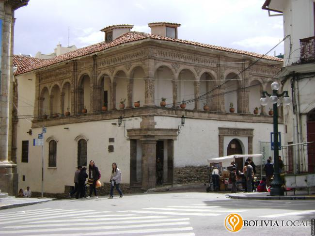 |
El Museo Nacional de Arte antes denominado "Palacio de los Condes de Arana", se encuentra ubicado en la calle Comercio esq. Socabaya #485. Este museo fue inaugurado el año 1966, en él se expone pinturas que datan de la época virreinal hasta la época moderna. Pintores como Cecilio Guzmán de Rojas, Melchor Pérez de Holguín, pintores del siglo XIX y otros artistas contemporáneos están representados con trabajos de gran calidad artística. | 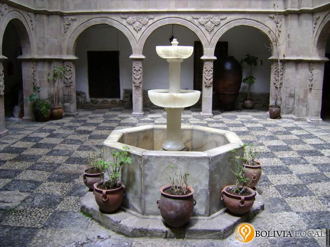 |
| 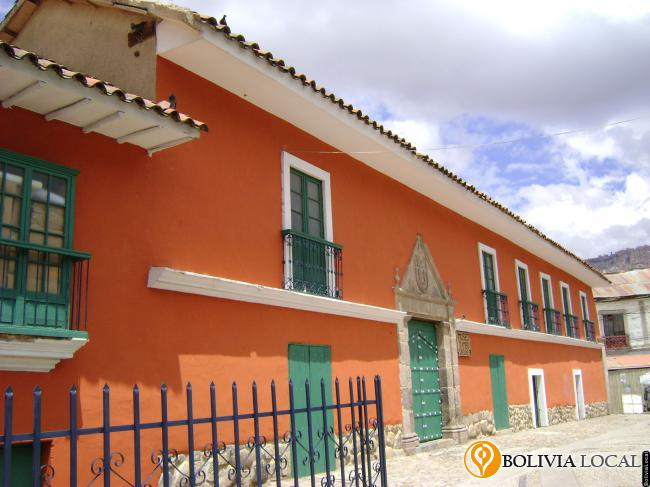 |
El Museo Tambo Quirquincho se encuentra ubicado en la calle Evaristo Valle s/n Plaza Alonso de Mendoza. A principios de la República se construyeron muchos tambos, aquí se vendían productos como la coca, alcohol, harina y otros. El tambo Quirquincho fue la residencia del cacique indígena Quirquincha. Este espacio fue expropiado a favor de municipio durante las gestiones de Mario Mercado y Raúl Salmón para posteriormente restaurarlo con la ayuda de los arquitectos Teresa Gisbert y José de Mesa. Luego se inauguró como museo histórico colonial. En la actualidad brinda sus salas a exposiciones permanentes y temporales, exhibiéndose colecciones, fotografías, pinturas, esculturas de la época de antaño de nuestra ciudad. En el interior de este museo se encuentra el auditorio "Amalia Gallardo", el patio central sirve de escenario para la realización de conciertos, ferias y varias actividades relacionadas con la cultura boliviana.. | 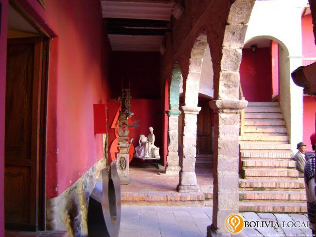 |
| 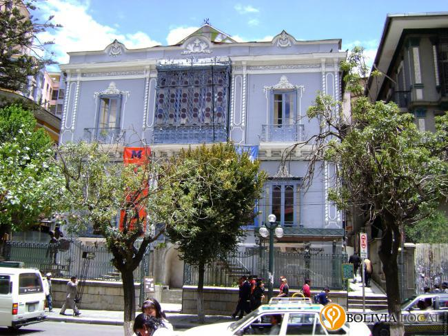 |
El Museo de Arte Contemporáneo Plaza se encuentra ubicado en la avenida 16 de julio # 1698 (El Prado). Es una casona del siglo XIX convertida en museo, en él se exhiben pinturas, esculturas, cerámica y obras de artistas nacionales o extranjeros. | 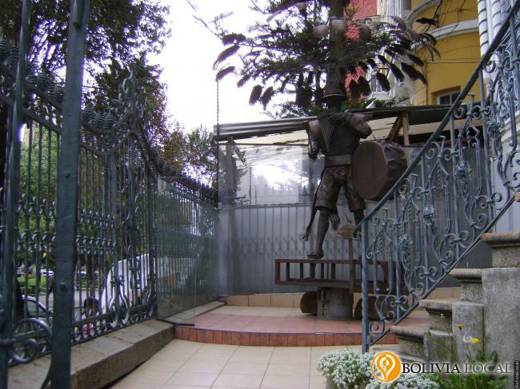 |
| 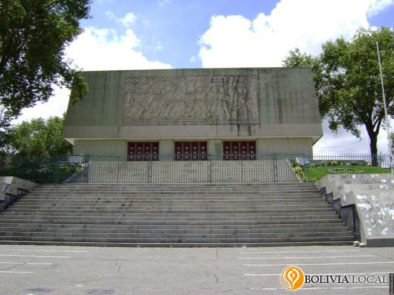 |
El Museo de la Revolución Nacional se encuentra ubicado en la Plaza Villarroel s/n Zona Miraflores. En este museo se exhiben fotografías y artículos que cuentan una parte de los sucesos históricos de nuestro país, como el triunfo de la revolución en 1952; la nacionalización de las minas, la reforma agraria en 1953, además de otros acontecimientos como la guerra del Chaco y las dictaduras militares. Aquí también se exponen fotografías de la época y murales de varios artistas como Walter Solón Romero y Miguel Alandia Pantoja, y los restos mortales del ex presidente Gral. Juan José Torres y otros mártires de la revolución. | 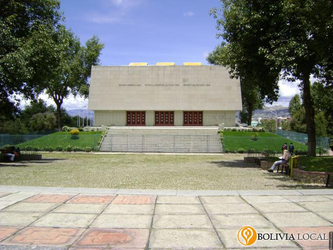 |
| 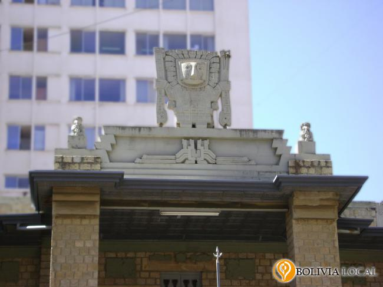 |
El Museo Nacional de Arqueología Tiwanaku se encuentra ubicado en la calle Tiwanaku #93 esquina Federico Zuazo. Este museo fue fundado en 1922, en él se expone una ordenada colección de piezas líticas, cerámica, tejidos, herramientas y otras muestras de la civilización de la cultura de Tiwanaku, aquí también se hallan piezas de las culturas Wankarani, Chiripa, de los Valles, el Oriente Boliviano y el Imperio Incaico. El 14 de febrero de 1990, el edificio "Palacio Tiwanaku" actual Museo Nacional de Arqueología de Bolivia, fue declarado Monumento Nacional. | 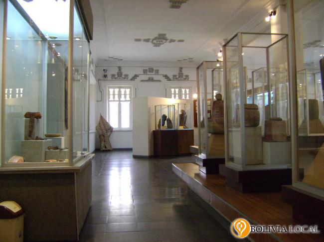 |
| 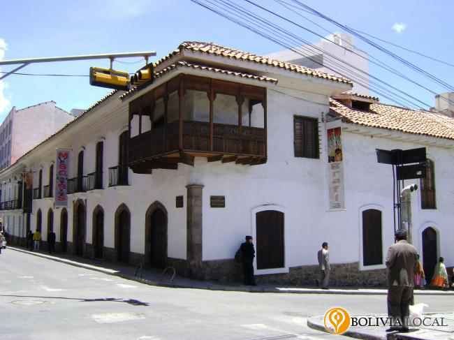 |
El Museo de Etnografía y Folklore MUSEF se encuentra ubicada entre la calle Ingavi y Genaro Sanjinés #916. Este edificio tiene estilo colonial barroco mestizo. En este museo se expone piezas arqueológicas de las culturas “Chipaya” y “Uru”, aquí se puede hallar exposiciones variadas de tejidos de las diversas culturas que habitan en todo el territorio nacional, también podemos encontrar una sala de mascarás de costumbres y festividades en las regiones del país. | 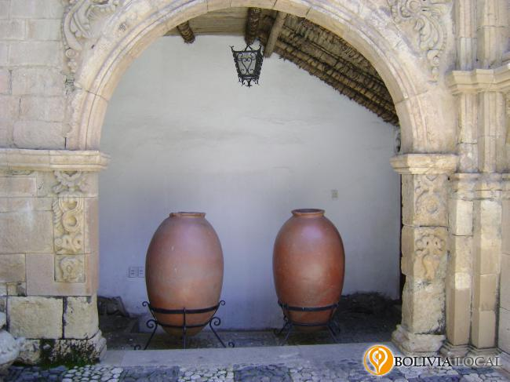 |